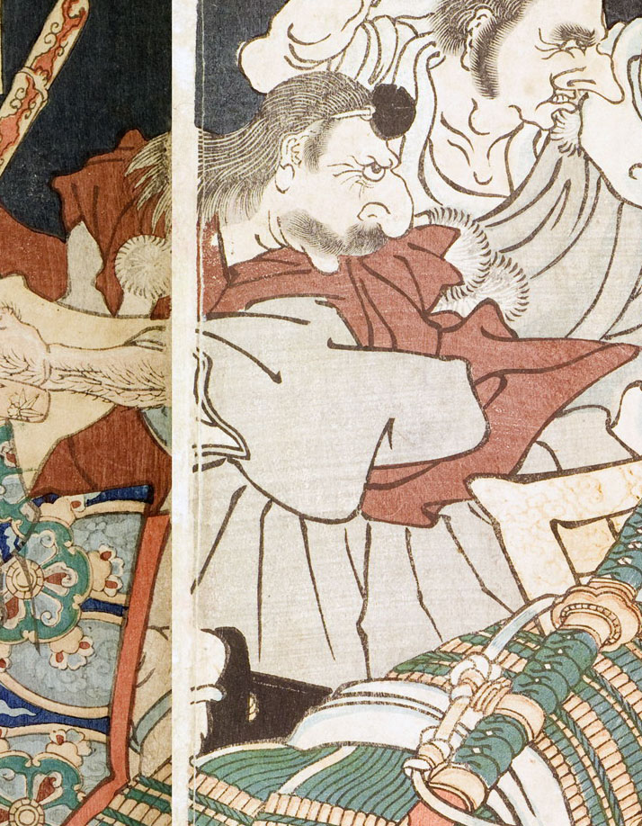

天狗；テング，頭襟；トキン，鼻；ハナ，結袈裟；ユイゲサ

天狗。愛宕栄術太郎。目玉は丸く、鼻は大きい。口ひげを生やしている。髪は肩まで伸び、額に頭襟を着けている。白い着物に赤い袖なし羽織をまとい、白い結袈裟を掛けている。画面右方を睨みつけている。
著作者：一魁齋芳年（月岡芳年）／出典：親書誌：U426_nichibunken_0138：五條の月；ゴジョウノツキ／日付：2009／資源識別子：U426_nichibunken_0138_0001_0005
Copyright (c)2010- International Research Center for Japanese Studies, Kyoto, Japan. All rights reserved.